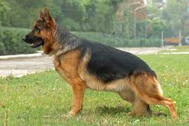

собака німецька вівчарка!

Німецька вівчарка , [ a ] також відома у Великій Британії як ельзаська вівчарка , — це німецька порода робочих собак середнього та великого розміру. Порода була виведена Максом фон Штефаніцем з використанням різних традиційних німецьких пастуших собак з 1899 року.